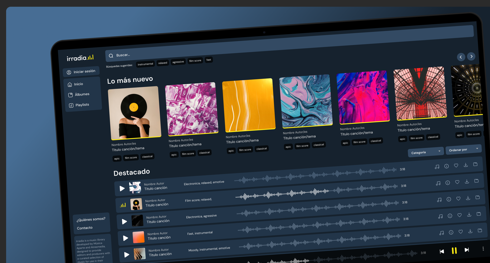
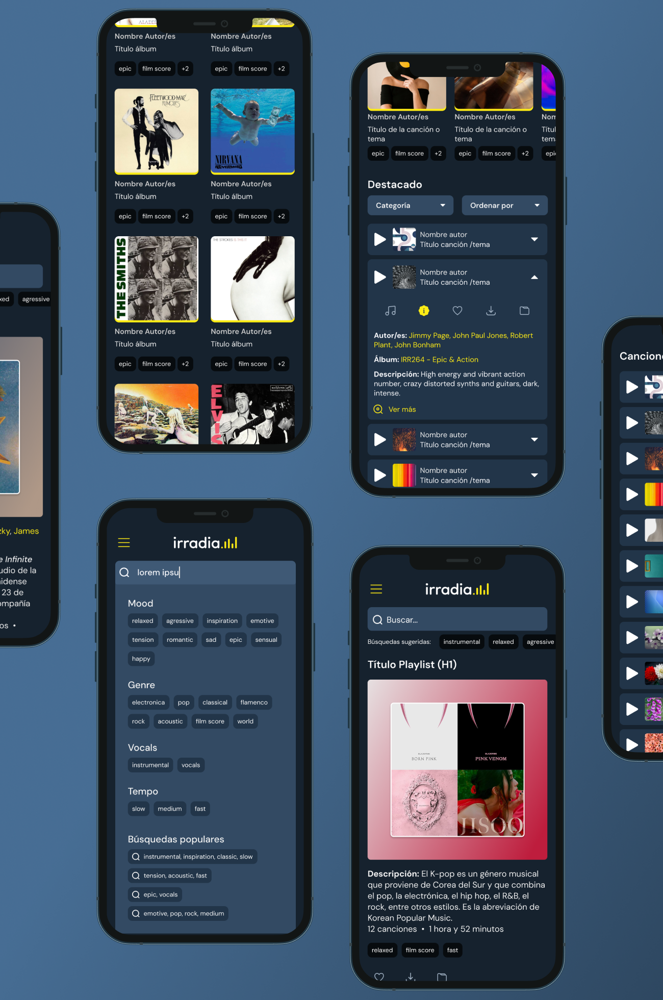
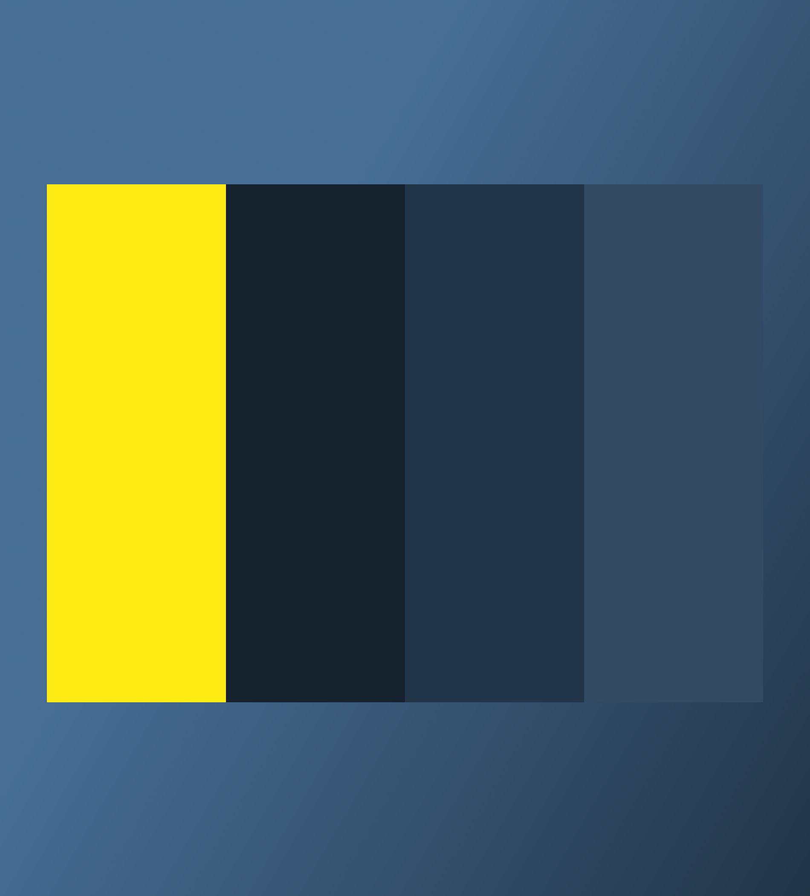

Irradia
Irradia es una biblioteca musical desarrollada por Música Aparte y Atresmedia, diseñada para ofrecer a editores y productores una selección cuidadosamente elegida de música para su uso en producciones audiovisuales.
Contexto
La plataforma había dejado de cumplir su función como biblioteca musical: la búsqueda era lenta, confusa y poco efectiva para los usuarios.
Reto
El reto consistía en transformar una experiencia basada en contenido desordenado en una herramienta eficiente de búsqueda y descubrimiento, capaz de responder a las necesidades reales de uso.
Proceso
Llevé a cabo un benchmark enfocado en identificar patrones y soluciones en productos similares, junto con la exploración de distintas estructuras mediante wireframes para validar la organización de contenidos y los flujos de navegación.
Solución
La solución evolucionó en dos líneas de diseño: una primera propuesta inspirada en los principios de Dieter Rams, centrada en la simplicidad y la claridad funcional, y una segunda iteración con un enfoque más contemporáneo, incorporando un dark mode tonal. En paralelo, se redefinieron la navegación y la zona de usuario para facilitar el acceso, la personalización y el control del contenido.
Resultado
El resultado es una herramienta centrada en la utilidad, la eficacia y la eficiencia, donde la búsqueda y el descubrimiento se convierten en el núcleo de la experiencia.


